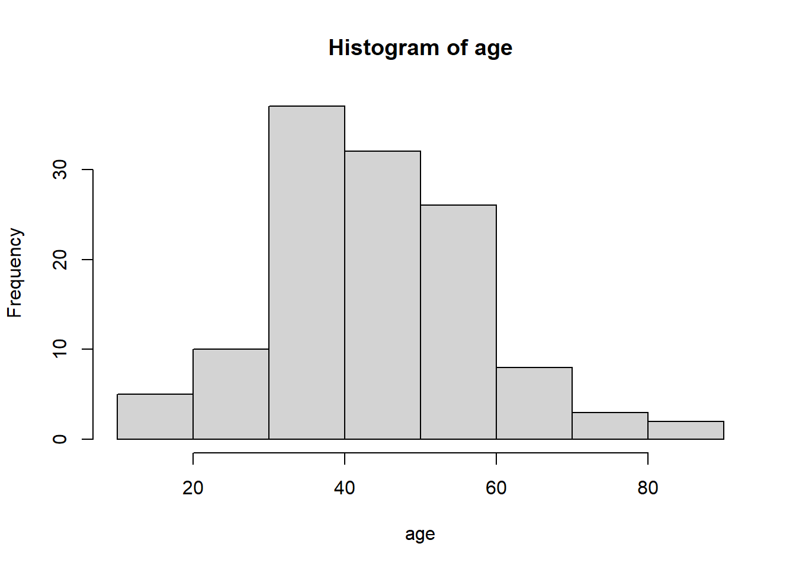
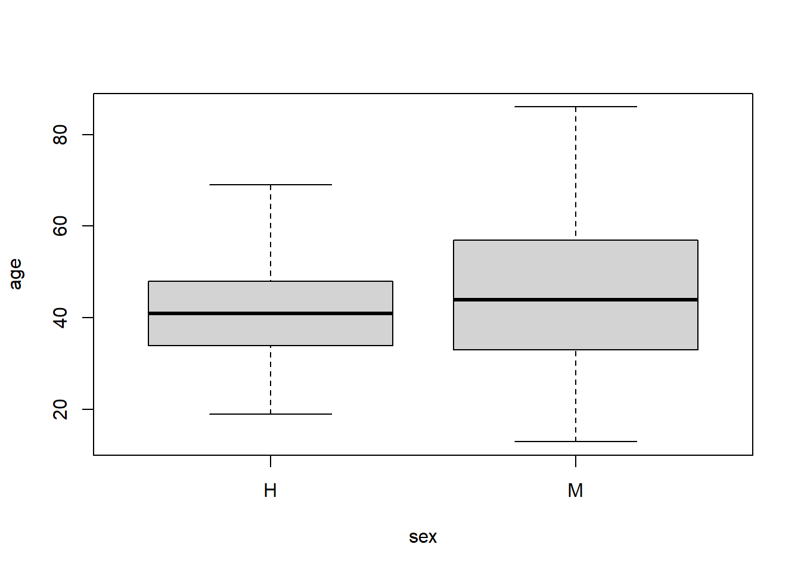
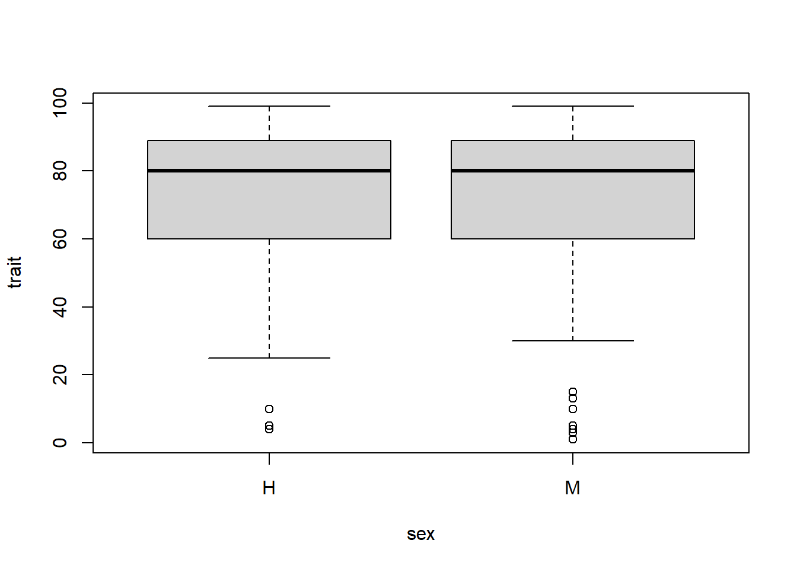
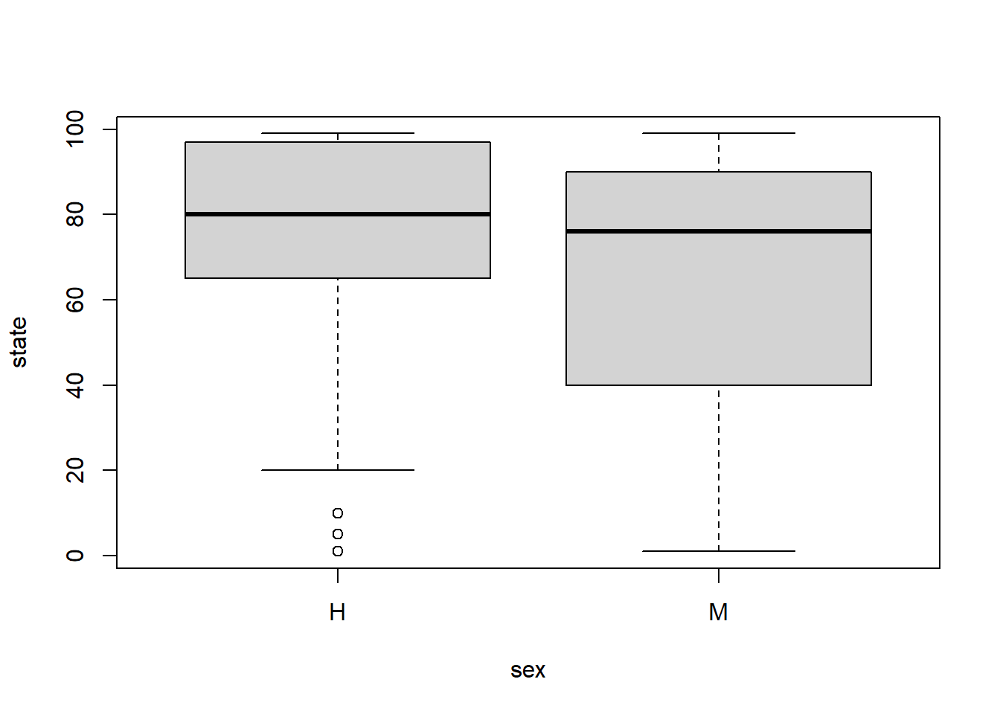
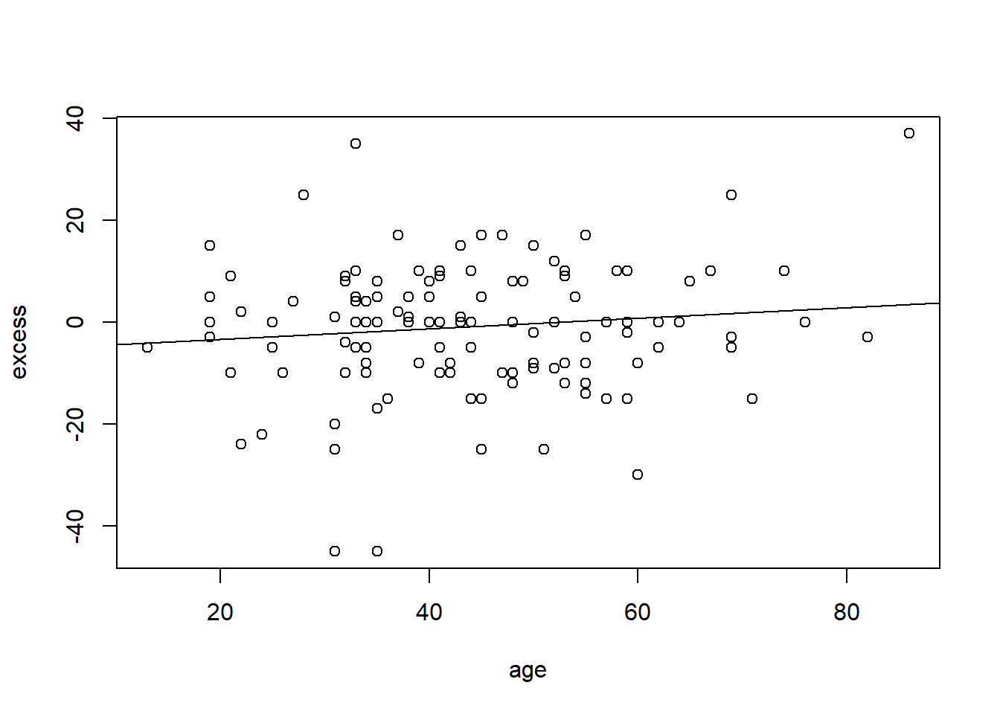
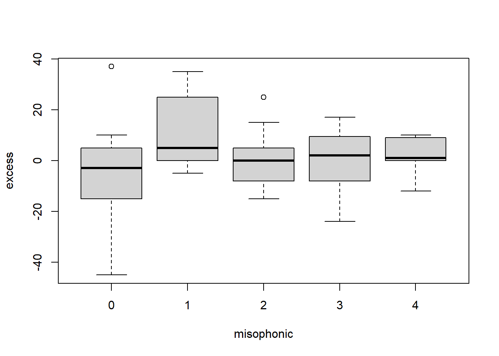

Chapter 20 Group Work sessions
20.1 Objectives
The objective of the work sessions is to work together with a student of a different background to perform a full analysis of the misophonia dataset.
The analysis is open. You can formulate the analysis you consider interesting, trying to cover as much as possible the material we have seen in theory and bootcamps.
Justify your analysis and discuss them.
We will have two sessions to perform the report that will be done in colab and handed in through google classroom.
Work together, follow your interests and have fun!
Next, we describe the data and show an example of the kind of analysis that can be performed in both group sessions.
20.2 Misophonia dataset
Misophonia is a recently described neurological condition whereby patients feel strong anxiety when hearing particular noises (someone blowing their nose, mobile ringing, trains passing, etc..). It is believed that 5% of the population suffers from this condition without knowing it, likely blaming their anxiety on other causes.
The misophonia dataset is from a recent (unpublished) study that aimed to describe the relationships between misophonia and anxiety, depression, and cephalometric measures (shape of the jaw).
## Misofonia Misofonia.dic Estado Estado.dic ansiedad.rasgo
## 1 si 4 divorciado 2 99
## 2 si 2 casado 1 75
## 3 no 0 divorciado 2 77
## 4 si 3 casado 1 95
## 5 no 0 casado 1 30
## 6 no 0 casado 1 30
## ansiedad.rasgo.dic ansiedad.estado ansiedad.estado.dic ansiedad.medicada
## 1 1 99 1 no
## 2 1 75 1 no
## 3 1 55 0 no
## 4 1 99 1 no
## 5 0 40 0 no
## 6 0 30 0 no
## ansiedad.medicada.dic depresion depresion.dic Sexo Edad CLASE
## 1 0 33.65 1 M 44 III
## 2 0 19.77 0 M 43 II
## 3 0 29.57 0 M 24 I
## 4 0 1.40 0 M 33 III
## 5 0 5.98 0 H 41 I
## 6 0 13.87 0 H 35 I
## Angulo_convexidad protusion.mandibular Angulo_cuelloYtercio Subnasal_H
## 1 7.97 13.0 89.6 1.5
## 2 18.23 -5.0 107.2 7.3
## 3 12.27 11.5 101.4 5.0
## 4 7.81 16.8 75.3 2.7
## 5 9.81 33.0 105.5 6.0
## 6 13.50 2.0 105.0 7.0
## cambio.autoconcepto Misofonia.post Misofonia.pre ansiedad.dif
## 1 1 21 14 0
## 2 0 14 13 0
## 3 NA NA NA -22
## 4 1 NA NA 4
## 5 NA NA NA 10
## 6 NA NA NA 0Here is the description of the variables
[1] “Misofonia”: Binary (si: misophinic, no: no misophinic)
[2] “Misofonia.dic”: Categorical (0: no misophinic, 1: severity 1, 2: severity 2, 3: severity 3, 4: severity 4)
[3] “Estado”: Marital status (casado: married, soltero: single, viuda: widow, divorciado:divorced)
[4] “Estado.dic”: Numeric Marital status
[5] “ansiedad.rasgo”: Score from 0-100 with anxiety personality trait
[6] “ansiedad.rasgo.dic”: Binary score (0,1) of anxiety personality trait
[7] “ansiedad.estado”: Score from 0-100 with current state of anxiety
[8] “ansiedad.estado.dic”: Binary score (0,1) with current state of anxiety
[9] “ansiedad.medicada”: Diagnosed with anxiety disorder (si, no)
[10] “ansiedad.medicada.dic”: Diagnosed with anxiety disorder (1, 0)
[11] “depresion”: Score from 0-50 with current state of depression
[12] “depresion.dic” : Binary score (0,1) with current state of depression
[13] “Sexo”: Male=H, Female:M
[14] “Edad”: Age
[15] “CLASE”: Type of jaw
[16] “Angulo_convexidad”: convexity angle
[17] “protusion.mandibular”: Projection of the jaw
[18] “Angulo_cuelloYtercio”: angle between jaw and neck
[19] “Subnasal_H”: Nasal angle
[20] “cambio.autoconcepto”: Whether people changed their self-concept after treatment.
[21] “Misofonia.post”: Misophionia diagnosed (A-MISO) after an educational program, where patients were made aware of a condition called misophonia.
[22] “Misofonia.pre”: Misophionia diagnosed (A-MISO) before an educational program, where patients were made aware of a condition called misophonia
[23] “ansiedad.dif”: Difference between anxiety state and anxiety trait scores
20.3 Group Work session 1: Data description
When reporting the results of a study, we first describe the variables of interest in tables and figures.
- We describe demographics (sex, age, marital status, etc..)
- We describe outcome variables (misophonia)
- We describe explanatory variables (cephalometric measures, anxiety, depression)
Example:
Imagine we want to study the anxiety of participants in the misophonia study
We load the data
## Misofonia Misofonia.dic Estado Estado.dic ansiedad.rasgo
## 1 si 4 divorciado 2 99
## 2 si 2 casado 1 75
## 3 no 0 divorciado 2 77
## 4 si 3 casado 1 95
## 5 no 0 casado 1 30
## 6 no 0 casado 1 30
## ansiedad.rasgo.dic ansiedad.estado ansiedad.estado.dic ansiedad.medicada
## 1 1 99 1 no
## 2 1 75 1 no
## 3 1 55 0 no
## 4 1 99 1 no
## 5 0 40 0 no
## 6 0 30 0 no
## ansiedad.medicada.dic depresion depresion.dic Sexo Edad CLASE
## 1 0 33.65 1 M 44 III
## 2 0 19.77 0 M 43 II
## 3 0 29.57 0 M 24 I
## 4 0 1.40 0 M 33 III
## 5 0 5.98 0 H 41 I
## 6 0 13.87 0 H 35 I
## Angulo_convexidad protusion.mandibular Angulo_cuelloYtercio Subnasal_H
## 1 7.97 13.0 89.6 1.5
## 2 18.23 -5.0 107.2 7.3
## 3 12.27 11.5 101.4 5.0
## 4 7.81 16.8 75.3 2.7
## 5 9.81 33.0 105.5 6.0
## 6 13.50 2.0 105.0 7.0
## cambio.autoconcepto Misofonia.post Misofonia.pre ansiedad.dif
## 1 1 21 14 0
## 2 0 14 13 0
## 3 NA NA NA -22
## 4 1 NA NA 4
## 5 NA NA NA 10
## 6 NA NA NA 0- We describe the participants’ sex, age, and marital status
- Sex
## sex
## H M
## 0.3658537 0.6341463
- Age
## [1] 43.93496## [1] 14.18654

- Age by sex
## [1] 40.64444## [1] 10.75165## [1] 45.83333## [1] 15.58339
- Marital status
## Mstate
## casado divorciado soltero viuda
## 0.52032520 0.21138211 0.23577236 0.03252033
- We describe the clinical outcome, for example, anxiety.
We have four measures of anxiety:
- Trait: ansiedad.rasgo (are you an anxious person?) continuous:0-100
- State: ansiedad.estado (are you currently feeling anxious?) continuous:0-100
- Diagnosed: ansiedad.medicada (have you been diagnosed with an anxiety disorder?) binary (si, no)
- Excess: ansiedad.dif (difference between State and Trait)
we describe these clinical outcomes
- Trait (min, max, quantiles, median)
## Min. 1st Qu. Median Mean 3rd Qu. Max. NA's
## 1.00 60.00 80.00 68.77 89.00 99.00 15

- State (min, max, quantiles, median)
## Min. 1st Qu. Median Mean 3rd Qu. Max. NA's
## 1.00 45.00 77.00 67.85 90.00 99.00 15

- Diagnosed

We can look at relationships between outcomes
- Trait Vs Estate

We can also look at the relationships between the clinical outcomes and the features of the participants
- Trait by sex

- State by sex

- Diagnosed by sex
## sex
## diagnosed H M
## no 42 71
## si 3 7
## sex
## diagnosed H M
## no 0.93333333 0.91025641
## si 0.06666667 0.08974359- Trait Vs age

- State Vs age

- age by diagnosis

20.4 Group Work session 2: Inference
When reporting the results of a study, we first describe the variables of interest in tables and figures.
- We describe demographics (sex, age, marital status, etc..)
- We describe outcome variables (misophonia/axiety/depression/etc..)
- We describe explanatory variables (cephalometric measures, anxiety, depression)
We then test the main hypotheses of the study.
We state the main relationships we want to study and formulate the statistical hypothesis (Introduction)
We describe how the study was performed and the statistical methods to test the hypothesis (Methods)
We describe the results of the hypothesis tests with statistics, and significance measures.
We illustrate the results with figures.
Example:
Imagine we want to study the anxiety of participants in the misophonia study.
We formulate the following hypothesis:
Participants who enrolled in the study had an increased level of anxiety from their baseline (trait) that is related to their:
- age
- sex
- misophonia state.
We are interested in the variable misofonia.dif, that is the observed excess of anxiety from the trait
\(excess = state - trait\)
- Are the state and trait of anxiety correlated?

##
## Pearson's product-moment correlation
##
## data: state and trait
## t = 23.282, df = 121, p-value < 2.2e-16
## alternative hypothesis: true correlation is not equal to 0
## 95 percent confidence interval:
## 0.8656964 0.9320106
## sample estimates:
## cor
## 0.9041609- Is excess in anxiety higher than \(0\)?
- We describe the Excess variable with summary statistics and figures (histogram)

## Min. 1st Qu. Median Mean 3rd Qu. Max. NA's
## -45.0000 -8.0000 0.0000 -0.9187 8.0000 37.0000 15- We then perform a hypothesis test for the mean of anxiety excess \(H_0:\mu=0\) against \(H_1:\mu \neq 0\).
##
## One Sample t-test
##
## data: excess
## t = -0.79192, df = 122, p-value = 0.4299
## alternative hypothesis: true mean is not equal to 0
## 95 percent confidence interval:
## -3.215212 1.377814
## sample estimates:
## mean of x
## -0.9186992- We conclude: We do not see significant large values of the difference in anxiety; Enrollment in the study does not seem to detect individuals with an excess of anxiety.
- Is excess in anxiety higher than \(0\) for men and women separately?
- We first describe the conditional distributions

- We perform the hypothesis test for each sex separately
##
## One Sample t-test
##
## data: excess[sex == "M"]
## t = -1.6994, df = 77, p-value = 0.09328
## alternative hypothesis: true mean is not equal to 0
## 95 percent confidence interval:
## -5.5685793 0.4403741
## sample estimates:
## mean of x
## -2.564103##
## One Sample t-test
##
## data: excess[sex == "H"]
## t = 1.1158, df = 44, p-value = 0.2706
## alternative hypothesis: true mean is not equal to 0
## 95 percent confidence interval:
## -1.558796 5.425462
## sample estimates:
## mean of x
## 1.933333- We conclude: We see that women (M) have a reduction in the excess of anxiety (almost significant), while men (H) had an increase (no significant). Why? perhaps because females tend to consult doctors before men do.
- Is the excess of anxiety significantly different between the sexes?
- We test the hypothesis \(H_0:\mu_{men}=\mu_{women}\) against \(H_1:\mu_{men}\neq \mu_{women}\) using a group t.test
##
## Welch Two Sample t-test
##
## data: excess[sex == "M"] and excess[sex == "H"]
## t = -1.9574, df = 102.39, p-value = 0.05302
## alternative hypothesis: true difference in means is not equal to 0
## 95 percent confidence interval:
## -9.05452801 0.05965621
## sample estimates:
## mean of x mean of y
## -2.564103 1.933333- We conclude: we see that the difference between the group means is within the limit of significance with women having less excess anxiety than men.
##
## Call:
## lm(formula = excess ~ sex)
##
## Residuals:
## Min 1Q Median 3Q Max
## -42.436 -7.436 2.067 7.564 39.564
##
## Coefficients:
## Estimate Std. Error t value Pr(>|t|)
## (Intercept) 1.933 1.898 1.019 0.3105
## sexM -4.497 2.384 -1.887 0.0616 .
## ---
## Signif. codes: 0 '***' 0.001 '**' 0.01 '*' 0.05 '.' 0.1 ' ' 1
##
## Residual standard error: 12.73 on 121 degrees of freedom
## (15 observations deleted due to missingness)
## Multiple R-squared: 0.02858, Adjusted R-squared: 0.02055
## F-statistic: 3.56 on 1 and 121 DF, p-value: 0.06158- Is excess in anxiety higher in older people?
- We make a plot between anxiety and age

- We fit the regression model
\[excess = \alpha + \beta * age + \epsilon\]
and test the hypothesis \(H_0: \beta=0\) against \(H_1: \beta\neq 0\)
##
## Call:
## lm(formula = excess ~ age)
##
## Residuals:
## Min 1Q Median 3Q Max
## -43.151 -7.776 0.912 8.516 37.057
##
## Coefficients:
## Estimate Std. Error t value Pr(>|t|)
## (Intercept) -5.4917 3.7799 -1.453 0.149
## age 0.1041 0.0819 1.271 0.206
##
## Residual standard error: 12.83 on 121 degrees of freedom
## (15 observations deleted due to missingness)
## Multiple R-squared: 0.01317, Adjusted R-squared: 0.005016
## F-statistic: 1.615 on 1 and 121 DF, p-value: 0.2062
- We conclude: The association, while positive it is not significant. If we adjust by sex the association is a bit stronger but still not significant.
##
## Call:
## lm(formula = excess ~ age + sex)
##
## Residuals:
## Min 1Q Median 3Q Max
## -40.969 -6.849 0.781 8.019 34.124
##
## Coefficients:
## Estimate Std. Error t value Pr(>|t|)
## (Intercept) -3.57179 3.82807 -0.933 0.3527
## age 0.13545 0.08198 1.652 0.1011
## sexM -5.20025 2.40467 -2.163 0.0326 *
## ---
## Signif. codes: 0 '***' 0.001 '**' 0.01 '*' 0.05 '.' 0.1 ' ' 1
##
## Residual standard error: 12.64 on 120 degrees of freedom
## (15 observations deleted due to missingness)
## Multiple R-squared: 0.05019, Adjusted R-squared: 0.03436
## F-statistic: 3.17 on 2 and 120 DF, p-value: 0.04553- Is excess in anxiety different between misophonic grades?
We plot the excess anxiety across groups (boxplot)

We test the hypothesizes \(H_0: \mu_{0}=\mu_{1} ... =\mu_{4}\) against \(H_1:\) at least one of them is different. We fit an ANOVA model.
##
## Call:
## lm(formula = excess ~ misophonic)
##
## Residuals:
## Min 1Q Median 3Q Max
## -39.902 -8.257 1.243 7.152 42.098
##
## Coefficients:
## Estimate Std. Error t value Pr(>|t|)
## (Intercept) -5.098 1.944 -2.622 0.00988 **
## misophonic1 17.098 5.896 2.900 0.00445 **
## misophonic2 3.854 2.822 1.366 0.17464
## misophonic3 6.904 2.962 2.331 0.02148 *
## misophonic4 7.986 4.582 1.743 0.08391 .
## ---
## Signif. codes: 0 '***' 0.001 '**' 0.01 '*' 0.05 '.' 0.1 ' ' 1
##
## Residual standard error: 12.45 on 118 degrees of freedom
## (15 observations deleted due to missingness)
## Multiple R-squared: 0.09483, Adjusted R-squared: 0.06414
## F-statistic: 3.09 on 4 and 118 DF, p-value: 0.01847## Analysis of Variance Table
##
## Response: excess
## Df Sum Sq Mean Sq F value Pr(>F)
## misophonic 4 1915 478.76 3.0904 0.01847 *
## Residuals 118 18280 154.92
## ---
## Signif. codes: 0 '***' 0.001 '**' 0.01 '*' 0.05 '.' 0.1 ' ' 1- We conclude: We see that anxiety excess of misophonia grade 1 is significantly higher than misophonia grade 0 (no misophonia), as it is grade 3. The ANOVA table shows that we accept the alternative hypothesis, where the differences between groups are significantly higher than within groups.
- Are the differences in excess anxiety between monophonic grades modulated by sex?
- We plot excess anxiety for each misophonic group, for men and women separately

- We perform an ANOVA test for the interaction
## Analysis of Variance Table
##
## Response: excess
## Df Sum Sq Mean Sq F value Pr(>F)
## misophonic 4 1915.0 478.76 3.0366 0.02026 *
## sex 1 179.7 179.74 1.1400 0.28792
## misophonic:sex 4 284.5 71.13 0.4512 0.77137
## Residuals 113 17815.9 157.66
## ---
## Signif. codes: 0 '***' 0.001 '**' 0.01 '*' 0.05 '.' 0.1 ' ' 1- We conclude: We do not see a significant interaction (modulation) of the effect of sex on the group differences. We cannot say that the profiles of anxiety excess across misophonia grades are different between sexes.